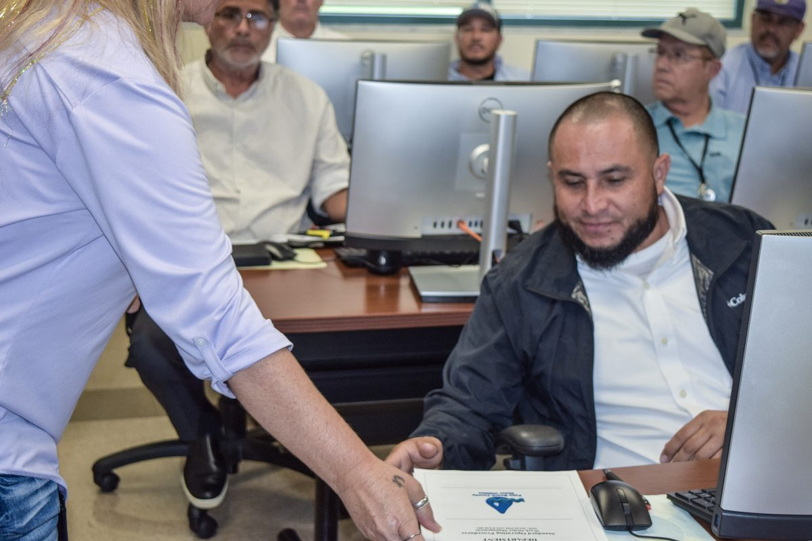

The hard part is making it work.
You may already have an asset management policy and strategy. You probably have maintenance programs, asset data, business systems, procedures, and people who know the work. That doesn't mean they all work together.
A strategic objective can make perfect sense at the executive level and disappear by the time it reaches day-to-day operations. Data can be available without being useful. A new system can automate a process that wasn't working particularly well to begin with. And a responsibility can appear perfectly clear on an organization chart while three departments have different ideas about who owns it.
These problems are common, and they are what implementation looks like. Gray Oak works with organizations to find those gaps, understand why they exist, and fix what matters.
What We Look At
People
People
We look at who makes the decisions, who owns the outcomes, and whether people understand what is expected of them and have the knowledge and authority to deliver it. Sometimes the process is fine and ownership was never clear.
Process
Process
A procedure that looks good on paper but doesn't reflect how work happens will eventually be worked around. We help organizations design and improve processes that people can use and sustain.
Data
Data
Data does not have to be perfect, but it does need to be good enough for the decision being made. We help organizations determine what information matters, who owns it, how reliable it needs to be, and how it should be used.
Technology
Technology
Technology should solve a problem. We start with the decisions people need to make and the work they need to do before deciding what a system, dashboard, automation, or AI application should provide.
Assets
Assets
Ultimately, the work has to improve how assets are planned, operated, maintained, renewed, and replaced — with a clear understanding of performance, risk, cost, and the service the asset exists to provide.
From Strategy to the Work
Asset management reaches across the organization, well beyond engineering and maintenance. A capital decision may depend on operational risk. A maintenance strategy may depend on asset information. A technology project may change a business process. A procurement decision may affect lifecycle cost for years. Those connections matter, and Gray Oak helps organizations make them visible and manageable, from asset management strategy and ISO 55001 to maintenance, organizational capability, data, performance measurement, and technology.
Explore Our ServicesInsights
We write about the part of asset management that doesn't always fit neatly into a framework: what happens when strategy meets operations, why programs stall, how organizations learn, and where data and technology help.
Read Our InsightsWhere Are You Today?
Some organizations are just beginning formal asset management. Others have been doing it for years and are trying to get better at it. We work with both. The five stages we see most often are building, maturing, modernizing, sustaining, and in transition, and we describe each on the Who We Help page.
Who We Help
Start a Conversation
You don't need to know which service you need. Tell us what you are trying to accomplish and where you are getting stuck. We can start there.
Contact Gray Oak